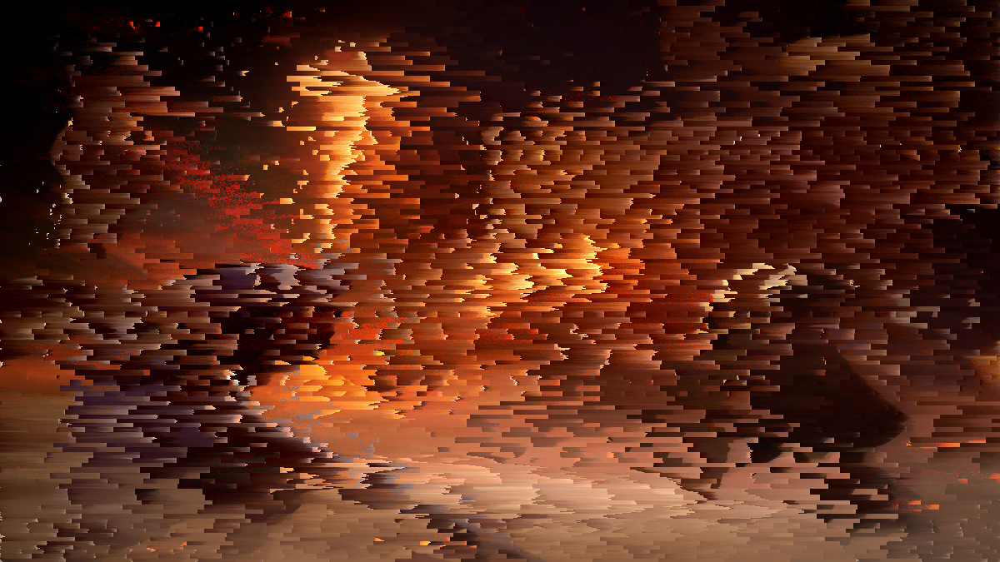

Image Effects
Handmade image post-processing by manipulating rgb data directly. This is a potential future area for testing multithreading and SIMD.
View on GitHub

As a Software Engineer and Data Scientist, I have a particular interest in high-performance graphics programming and computational applications. My portfolio showcases my passion for creating efficient, visually engaging software solutions, particularly using C++ and low-level graphics programming.
Handmade image post-processing by manipulating rgb data directly. This is a potential future area for testing multithreading and SIMD.
View on GitHubThis is a dynamic wave mesh, created using OpenGL with the sum-of-sines method. This was a really fun project, and I learn how to write vertex and fragement shaders. I ended up rendering ~45,000,000 triangles in real time on a 2020 Macbook Air.
View on GitHubThis is a particle-based fluid simulation written in C++. This project explores optimization, parallelizing loops, and CFD algorithms.
View on GitHubThis is an aquatic-themed procedural animation demo in C++ using the Raylib framework. It involves hand programming, meshes, inverse kinematics, and constraint-based animation.
View on GitHubA basic program that generates chemical engineering block diagrams. This was one of my first experiments with C++.
View on GitHubA Tetris clone. That's about it...
View on GitHubI finished my Bachelors in Data Science in 2022, and work for National Australia Bank as a backend Java Develop and part time consulting data scientist. Most of my professional work is written in Java and Python, so I experiment with C++ for fun on my personal projects.
I'm experienced with modern software development practices, such as cloud services, microservice architecture, automated testing, and CI/CD pipelines.
Interested in working together or want to ask about any of my work?
You can reach me at: dylanmbeaumont@gmail.com or find me on LinkedIn.